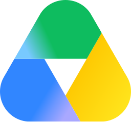
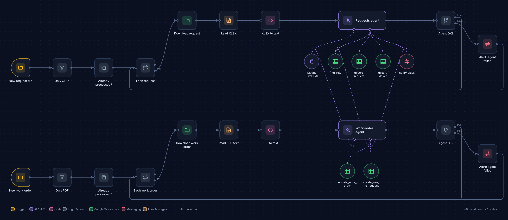
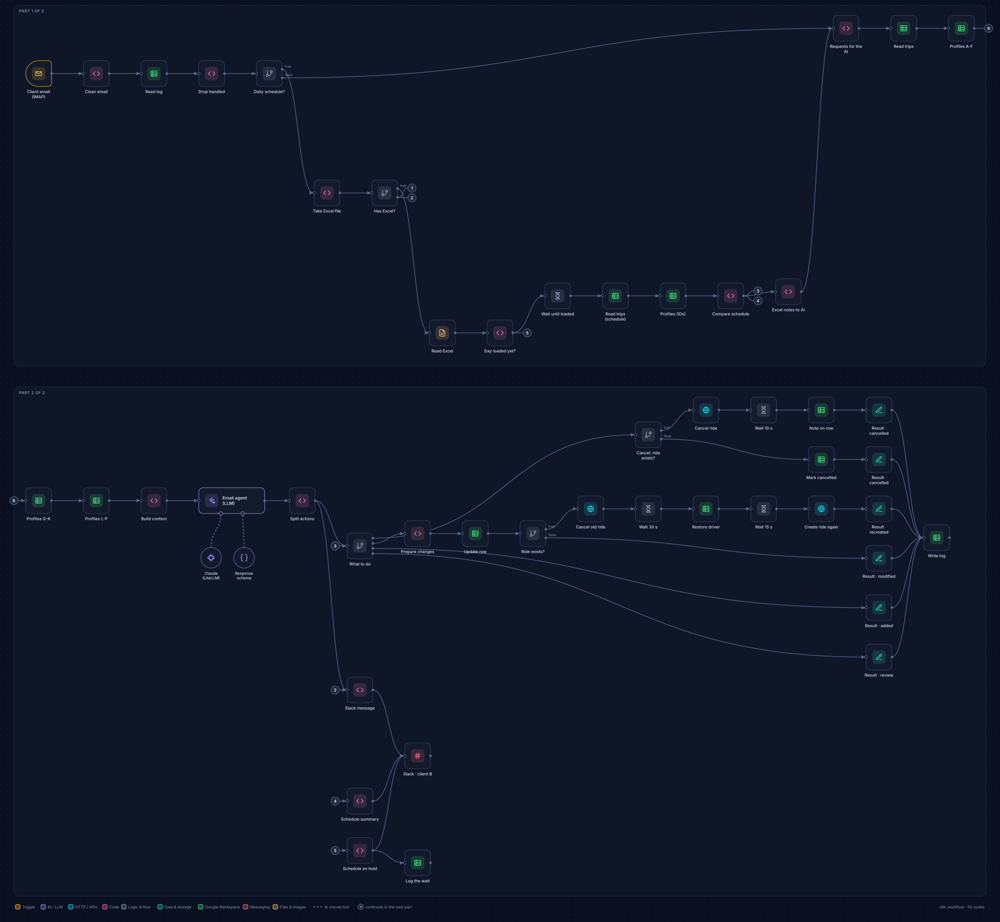
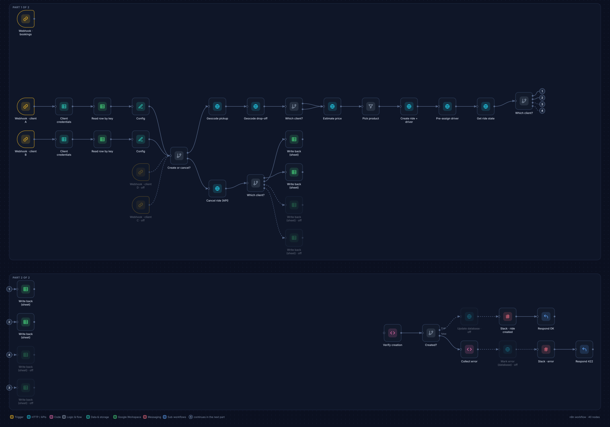

Case study · Cabify Spain · Apr to Oct 2026
Email-to-Reservation Pipeline (B2B)
Two corporate clients book their rides by email. One sends spreadsheets of service requests while its fleet partner sends back signed work orders; the other sends a daily schedule plus loose emails with changes. A support team used to type every trip into the platform and attach the driver by hand. Now AI agents read every file and email, the sheets check each trip, and the rides are created, changed and cancelled on their own through the public API, with the driver already attached. People only see the exceptions.

Google DriveHow it works
Both clients run on the same pattern: AI reads and proposes, deterministic code checks and acts. What changed in the last weeks is the step in the middle: rides used to go out when a person clicked a link in the sheet, and now a script in each sheet decides when a row is ready and sends it on its own.
Client A: requests and work orders
- Intake. A mailbox watcher saves the client's request spreadsheets to Drive; the fleet partner's signed work orders arrive the same way.
- Reading. A requests agent and a work-order agent extract every field. Files already processed are skipped, and an agent that fails posts to Slack. Their tools are deliberately narrow: find a row, upsert a request, set the driver, update a work order, create a row when a work order has no request, and notify Slack. They can only write value columns; formula columns and anything that identifies a ride are out of their reach.
- Cross-check. The sheet has one row per service-day and a CHECK column that compares request and work order live (OK, warning, mismatch, no request), with the differing cells highlighted. The formulas use VSTACK arrays, because curly-brace array literals break in a Spanish locale.
- Automatic action. An Apps Script watcher runs every minute and looks at each row every two. A ride is created only when its CHECK has been OK and unchanged for 4 minutes, so a half-typed edit never becomes a ride, and a cancellation has to stay put for 9 minutes. It needs a driver ID, skips duplicate keys with an alert, calls the engine at most twice per row and six times per cycle, and 8 minutes after each call checks that the ride exists.
- Where it stops. Inside the last two hours before a pickup it never acts: it alerts and a person decides. It remembers what it cancelled itself, so a row that comes back to OK is recreated, but a ride cancelled by a person or created outside the flow is never touched. A dry-run mode logs what it would do without calling anything, and every action goes to a log tab and to Slack.
| Day | Time | Route | CHECK | AUTO | Journey |
|---|---|---|---|---|---|
| Mon 14 | 07:30 | Office A → Studio 2 | OK | Created 06:58 · checked 07:06 | J-8F21 |
| Mon 14 | 09:15 | Studio 2 → Airport T4 | OK | Stable 3 of 4 min | |
| Mon 14 | 13:00 | Studio 1 → Hotel | MISMATCH | Waiting for a fix | |
| Mon 14 | 15:10 | Hotel → Studio 1 | OK | Under 2 h: alert sent, a person decides | |
| Tue 15 | 06:45 | Home → Studio 2 | CANCELLED | Ride cancelled 21:40 | J-7C02 |
| Tue 15 | 18:30 | Studio 2 → Station | NO REQUEST | Blocked |

Client B: a daily schedule and loose emails
The second client works differently. Most trips repeat every week, a schedule arrives each day as an Excel file, and changes come as free-text emails at any hour.
- Trips are built in advance. Every night the sheet script adds the next two days of trips from each passenger's recurring profile (three on Thursday night, to cover the weekend) and normalises the phone numbers.
- Creation is automatic. Every minute the script sends a trip to the engine once: when its create flag has been visible for 2 minutes, it is at least an hour away and it has no ride yet. An operator's note on the row holds it back.
- Driver changes are handled. The API cannot reassign a driver, so when the driver of a created trip changes and stays changed for 2 minutes, the ride is cancelled and created again; if the driver has not accepted, the row turns yellow.
- The schedule is compared in code. Once the sheet has loaded that day (the workflow waits and tells Slack if it has to), the Excel is compared row by row, the most recent email wins, and missing trips are requested from the sheet script.
- Free text goes to Claude. Loose emails and notes in the Excel go to the model with the trips of the next seven days and the passenger's full profile. It answers in a fixed schema (type, passenger, summary, actions), code validates the actions, and a switch cancels, modifies, adds or sends to review. A modified trip with a ride already created is cancelled, its driver restored and the ride created again.
- No confidence threshold. What the model cannot resolve goes to review instead of being guessed, and every email ends in the log and in one Slack message.

One engine for many clients
Both sheets call the same n8n engine through one webhook per client. Credentials and settings come from a data table, the row is read by its key, and the path splits into create or cancel. Creating geocodes both addresses, gets a price estimate, picks the product by name and creates the ride with the preferred driver in the same call; the engine then reads the ride back, verifies it and writes the result to that client's sheet. Every failure goes to one error collector that posts to Slack and answers with a clear 422, and a small scheduled workflow refreshes each client's API token. Payloads are built with JSON.stringify, so quotes and accents in addresses never break a request.

Driver pre-assignment
Every trip for these clients needs a named driver. For a while that meant a manual step, because the internal service that reserves drivers was not reachable from n8n. I documented the volume that depended on it and opened a request with the product team. In September we moved to the public API's preferred-driver field, so creating the ride and assigning the driver is one call, behind a feature flag for the accounts that need it.
Taught at the company academy. This was the second case in the Level 2 n8n workshop on 30 September 2026: one workflow collects the email attachments into a Drive folder, a second one reads each new file with an AI agent, updates the operations sheet and posts in Slack, and nothing is processed twice.
What I learned
- AI reads and proposes; deterministic code checks and acts. Taking the person out of the create step was only safe once the sheet could tell a stable row from one that is still being edited, hence the minutes of stability before anything happens.
- Automation should know when to stop. The last two hours before a pickup belong to a person, and the script never undoes what a person did.
- The first version was expensive for a reason that had nothing to do with the model: one tool returned a whole sheet on every call. The fix is in LLM cost control.
The clients, the fleet partner and all volumes are left out on purpose. The sheet above is an illustration with invented rows.